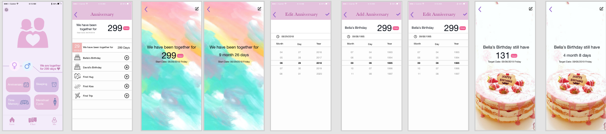

App Design


This smartphone app designed for couples to use and offer private space for them to use. Provide a convenient platform for communication and memorize every moment. Even if the couples stay apart, they still can share things on this app to reach each other and give people the feeling they still are together. The goal to make this app is to increase the love feelings between couples and last the relationship. Reduce the frequency of quarrels between couples. In this app, it includes these functions: Private Chat: Record every happiness love moment and only two of the couple can see. Remote alarm clock: Wake up each other. Day of commemoration: Record various anniversaries. Record women's miserable days for each month. Location Check: Protect each other's safety. Journal: Sometimes people are hard to talk about something when face to face. This is an excellent opportunity to express their true feelings and let each other see it. Private Album. I make two versions for different genders.